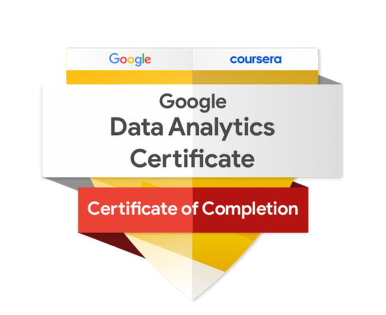

AICHU TAN
Data Scientist • AI & Machine Learning • AI & LLM Applications
M.S. in Big Data Analytics (Dec 2025) with experience building end-to-end data science and AI systems across public health, agriculture, and urban analytics. Skilled in machine learning, time-series forecasting, computer vision (YOLO), and LLM-based applications (LangChain), with a focus on delivering scalable, real-world solutions.
Experienced in developing production-ready pipelines, including data engineering, model development, and cloud deployment using Streamlit, Supabase, Render, and AWS. Proficient in Python, SQL, R, and data visualization tools such as Tableau and ArcGIS.
Passionate about building data-driven systems that support decision-making, improve operational efficiency, and create real-world impact.
Key Highlights
- Built 5+ end-to-end data science and AI systems (ML, LLM, Computer Vision)
- Deployed production-ready applications using Streamlit, Hugging Face, and cloud platforms
- Achieved strong model performance (R² up to 0.89, mAP@50 up to 0.894)
- Experience across public health, agriculture, and urban analytics domains
My Projects
End-to-End Dengue Forecasting in Southern Taiwan
Tools: Python, Scikit-learn, XGBoost, Random Forest, LSTM, Transformer, Time Series Forecasting, Feature Engineering, ArcGIS, Streamlit, Supabase, Render (Cloud), SQL
Built an end-to-end machine learning pipeline to forecast weekly dengue cases across Southern Taiwan using 15+ years of epidemiological, climate, and mosquito data, enabling early-warning insights for public health decision-making.
- Integrated multi-source datasets (2010–2024) including dengue surveillance, climate, rainfall, and mosquito indices into a unified weekly time-series dataset
- Engineered lag-based features (1–15 weeks) to capture delayed environmental and epidemiological effects on dengue transmission
- Developed and compared multiple models including Random Forest, XGBoost, LSTM, and LSTM–Transformer using time-series validation
- Achieved strong predictive performance with tree-based models (e.g., Random Forest R² = 0.899 in Kaohsiung), outperforming deep learning models in outbreak prediction
- Identified key drivers of dengue risk, with recent case lags and climate variables as the most influential features
- Designed and deployed a cloud-based architecture using Supabase (data storage) and Render (hosting), enabling scalable and reproducible model serving
- Built interactive dashboards using Streamlit and ArcGIS to visualize forecasts, model performance, and spatiotemporal outbreak patterns
Impact: Developed a scalable early-warning system for dengue outbreaks, enabling data-driven public health planning, resource allocation, and proactive disease prevention strategies.
Project Page Live Dashboard View on GitHubAI for Farmers: Computer Vision & LLM-Based Plant Disease Detection System
Tools: Python, YOLOv8, PyTorch, LangChain, LLM, RAG, Streamlit, Hugging Face
Designed and deployed an end-to-end AI system that combines computer vision and retrieval-augmented generation (RAG) to detect plant diseases and deliver real-time, actionable agricultural recommendations.
- Trained a YOLOv8 object detection model on 13,500+ annotated images across 20 disease classes, achieving strong performance (mAP@50: 0.894, Recall: 0.862)
- Built a full ML pipeline including data preprocessing, annotation, augmentation, and model evaluation using precision, recall, and mAP metrics
- Developed a retrieval-augmented advisory system using LangChain and LLMs to generate structured, farmer-friendly recommendations from agricultural literature
- Implemented a vector-based knowledge retrieval system by transforming agricultural documents into embeddings for efficient semantic search
- Designed a two-stage architecture (offline knowledge processing + real-time inference) to enable scalable and low-latency deployment
- Built an interactive web application using Streamlit allowing users to upload plant images and receive real-time disease predictions and treatment guidance
- Deployed the application on Hugging Face Spaces, enabling scalable cloud-based access and public demonstration of the AI system
Impact: Delivered a scalable AI-driven decision support system that improves early disease detection, reduces reliance on harmful pesticides, and promotes sustainable agriculture for smallholder farmers.
Project Page Live Demo GitHub RepositoryPredicting Restaurant Ratings Using Yelp Data (Machine Learning)
Tools: Python, Scikit-learn, XGBoost, Random Forest, MLflow, Pandas, Feature Engineering, Machine Learning, Clustering
Developed an end-to-end machine learning pipeline to predict restaurant ratings using structured Yelp metadata, uncovering key drivers of customer satisfaction without relying on text reviews.
- Processed and engineered 60+ features from 36,000+ restaurant records, transforming complex JSON data into a structured analytical dataset
- Built and compared multiple supervised models (Logistic Regression, Elastic Net, Random Forest, XGBoost) using Scikit-learn pipelines and 5-fold cross-validation
- Achieved strong predictive performance with XGBoost (Accuracy: 0.73, ROC-AUC: 0.79) and Random Forest (best F1-score: 0.66)
- Designed a robust ML pipeline including feature scaling, encoding, imputation, and hyperparameter tuning to prevent data leakage
- Implemented MLflow for experiment tracking, model comparison, and reproducibility
- Conducted feature importance and model interpretability analysis to identify key drivers of ratings (price, amenities, service features)
- Applied K-Prototypes clustering to segment restaurants into distinct business archetypes based on operational characteristics
- Generated actionable insights showing that accessibility, service quality, and amenities significantly impact customer satisfaction
Impact: Demonstrated that structured business metadata alone can effectively predict customer ratings, providing actionable insights for improving restaurant performance and customer experience.
Project PageOnline Ticket Reservation: Data Modeling & Analytics Dashboard
Tools: SQL (MySQL), Python, AWS RDS, Data Modeling (ERD), Data Analysis, Dashboarding
Designed and implemented a relational database system with integrated analytics to generate business insights on ticket sales, customer behavior, and revenue performance.
- Designed normalized relational database schema (ERD → relational model) supporting complex relationships across users, events, bookings, and payments
- Implemented database in MySQL with constraints, indexes, triggers, and stored procedures to ensure data integrity and optimize query performance
- Deployed database on AWS RDS with role-based access control (admin vs read-only users) for secure and scalable data management
- Wrote advanced SQL queries to analyze key business metrics including revenue trends, top-performing events, venue utilization, and customer segmentation
- Engineered analytical features such as monthly revenue growth, ticket category distribution, and organizer revenue contribution
- Built an interactive dashboard (Python + Datapane) to visualize KPIs including total revenue ($70K+), bookings, and customer insights
- Identified patterns in customer behavior, payment methods, and discount usage to support data-driven decision-making
Impact: Transformed transactional data into actionable insights, enabling analysis of revenue drivers, customer segments, and operational performance for business optimization.
View ProjectWage Theft Analysis: Data-Driven Study of Labor Inequality
Tools: R (dplyr, forecast), Tableau, SQL, Data Analysis, Time Series Modeling, Spatial Analysis
Conducted end-to-end data analysis of wage theft claims to uncover inefficiencies in labor enforcement systems using statistical modeling and geospatial analysis.
- Cleaned and integrated multi-source datasets (2011–2016), resolving duplicates and inconsistencies to produce 6,500+ verified records
- Engineered key features including claim duration, wage recovery rate, and geographic indicators (ZIP code extraction)
- Quantified claim processing delays, identifying a 230-day average time to hearing—over 2× the legally required timeframe
- Calculated that only ~35% of verified wages were recovered, revealing systemic gaps in enforcement outcomes
- Developed ARIMA time series model in R to forecast claim resolution time (~264 days average)
- Built interactive Tableau dashboards to analyze industry trends, wage recovery, and geographic distribution of violations
- Performed geospatial analysis revealing nationwide distribution of wage theft cases across industries
Impact: Provided data-driven evidence of inefficiencies in wage claim processing and recovery, supporting labor policy improvements and resource allocation decisions.
View Project Website GitHub RepositoryMapping for Change: Spatial Analysis of Urban Inequality
Tools: ArcGIS, Spatial Analysis, Data Visualization, HTML, GitHub Pages
Conducted a data-driven spatial analysis to examine the intersection of housing burden, homelessness, and environmental inequality across Downtown San Diego using multi-source public datasets.
- Integrated multiple datasets including 311 encampment reports, PITC homelessness data, Census indicators, and Tree Equity Score
- Engineered key metrics such as rent burden, affordability gap, and environmental equity indicators
- Performed spatial analysis using choropleth maps, heatmaps, and layered geospatial visualization techniques
- Modeled relationships between income, housing cost, homelessness density, and green space access
- Built an interactive ArcGIS dashboard enabling multi-layer exploration and comparison of inequality patterns
- Detected geographic clusters where housing instability, environmental risk, and homelessness overlap
Impact: Revealed high-risk neighborhoods with compounded socioeconomic and environmental vulnerability, supporting data-driven urban planning and policy decisions.
Live SiteDecision Support System Design for Personalized Hospitality
Tools: System Design, Machine Learning Concepts
Designed a comprehensive Decision Support System (DSS) to enable real-time, data-driven decision-making for personalized guest services in a hotel environment.
- Defined data flows and analytical pipelines to support machine learning-driven recommendations
- Analyzed decision-making needs across multiple user groups (frontline staff, marketing, executives, and IT teams)
- Designed a system architecture integrating heterogeneous data sources (CRM, booking, POS, and customer feedback)
- Defined data pipelines, preprocessing workflows, and data quality requirements to support reliable analytics
- Selected appropriate analytical methods (clustering, classification, recommendation systems, NLP) based on decision context
- Designed role-specific dashboards to support real-time operational decisions and long-term strategic planning
- Considered real-world constraints including usability, latency, data privacy, and system scalability
Key Focus: Structured complex decision environments into actionable system components, aligning data, models, and user needs to support effective decision-making.
View Full ReportLA County Wildfire Decision Support System
Tools: HTML, CSS, JavaScript, Leaflet.js, ArcGIS, GitHub Pages + Jekyll, Real-Time Data Integration
Designed and developed an interactive decision support system to help Los Angeles County residents identify nearby shelters, assess wildfire risk, and access critical emergency resources in real time.
- Built an interactive map using Leaflet.js to visualize real-time shelter locations, hospitals, and evacuation centers
- Developed a geospatial dashboard to analyze wildfire hazard zones and assess population exposure across Los Angeles County
- Implemented filtering and search functionality to track shelter availability (Available, Limited, Full) for real-time decision support
- Designed a multi-page web application integrating shelter finder, hazard visualization, and emergency resource access
- Optimized users to quickly identify high-risk areas and nearby shelters, supporting faster emergency response and planning
Impact: Developed a real-time geospatial decision support tool that enables residents to identify wildfire risk zones and nearby shelters, improving situational awareness and supporting faster, data-driven emergency response.
View Live Site GitHub RepositorySpatial Analysis of Hispanic Community & Inequality in San Diego (2024)
Tools: ArcGIS StoryMaps, Census Data, Spatial Analysis
Analyzed demographic, income, and education disparities in San Diego using publicly available Census and socioeconomic datasets to identify high-need communities and inequality patterns.
- Conducted exploratory data analysis (EDA) to identify socioeconomic patterns
- Integrated multiple public datasets (demographics, income, education, environmental indicators)
- Performed spatial analysis using ArcGIS (choropleth maps, geographic comparisons)
- Identified relationships between Hispanic population distribution and socioeconomic factors
- Built an interactive StoryMap to communicate insights through maps and narrative
- Highlighted geographic clusters to support data-driven policy and urban planning decisions
Impact: Uncovered geographic clusters of socioeconomic inequality, enabling targeted resource allocation and supporting data-driven urban planning and policy decisions for underserved communities.
View StoryMapBellabeat Data Analysis Case Study
Tools: R, tidyverse, ggplot2, RMarkdown
Completed as part of the Google Data Analytics Capstone, this project analyzes Fitbit data to uncover user activity, sleep, and calorie trends. Based on findings, marketing recommendations were made for Bellabeat’s smart wellness devices.
View Live Site View GitHub RepoSkills
Programming
- Python
- SQL
- R
- JavaScript
AI & ML Frameworks
- Scikit-learn
- XGBoost
- Random Forest
- TensorFlow / PyTorch
- YOLOv8 (Computer Vision)
- LangChain (LLM, RAG)
Data Science & Analytics
- Time Series Forecasting
- Feature Engineering
- Statistical Analysis
- Geospatial Analysis (ArcGIS)
- Data Visualization (Tableau)
Cloud & Deployment
- AWS (EC2, S3, RDS)
- Supabase
- Render
- Streamlit
Web & Tools
- Streamlit
- HTML/CSS
- JavaScript
- Leaflet.js
- Git / GitHub
Education
San Diego State University (SDSU)
Master of Science in Big Data Analytics
Aug 2024 - Dec 2025 | GPA: 4.0

Google Data Analytics Professional Certificate
Completed via Coursera - Dec 2022
National Cheng Kung University (NCKU), Taiwan
Bachelor of Science in Chemical Engineering
Experience
Data Science Researcher - SDSU DiMoLab
Sep 2025 - Present | San Diego, CA
- Developed time-series forecasting models in Python to predict disease outbreaks, enabling early-risk detection and supporting proactive public health decision-making
- Performed data cleaning, feature engineering, and risk modeling on epidemiological and climate datasets to enhance predictive performance
- Contributed to the development of an AI-based early warning system for disease surveillance
- Co-authoring a research manuscript on disease outbreak forecasting for submission to a peer-reviewed journal
AI Researcher - Metabolism of Cities Living Lab
Feb 2025 - Dec 2025 | San Diego, CA
- Designed an AI-powered plant disease detection and advisory system integrating YOLOv8 and LLM-based retrieval (RAG)
- Trained computer vision models on 13,500+ images across 20 disease classes, achieving strong performance (mAP@50: 0.894)
- Developed a knowledge-driven recommendation pipeline using LangChain to transform agricultural research into actionable, real-time insights
- Deployed a real-time web application using Streamlit and Hugging Face Spaces, enabling accessible AI-powered decision support for smallholder farmers
- Co-authored research accepted at the 4th International One Health Conference (Rome, 2025)
Business Owner - Wholesale Clothing
April 2009 - Oct 2016 | Taiwan
- Increased sales by 50% by analyzing market trends and customer preferences
- Optimized supply chain using data analytics and logistics forecasting
- Managed import/export operations across Taiwan, China, and Indonesia
Process Engineer - ProMOS Technology (DRAM Manufacturing)
July 2004 - Feb 2009 | Taiwan
- Improved DRAM yield through statistical process control (SPC)
- Reduced manufacturing defects with root cause analysis and data modeling
- Developed low-temperature barrier nitride film to enhance transistor quality
Assistant Research Professor - NCKU Chemistry Department
July 2003 - June 2004 | Taiwan
- Researched nanoparticle-biomolecule interactions for medical applications
Publications
AI for Farmers: A YOLO and Language Model-Based Plant Disease Detection and Advisory System
Tan, A., Vito, D., & Fernandez, G. (2025). 4th International One Health Conference (Rome, Italy).
View PublicationRacemization and Hydrolysis of (S)-naproxen 2,2,2-trifluoroethyl Ester in Non-polar Solvents
Authors: Han-Yuan Lin, Eddy Lay, Wen-Yen Wen, Hamza
Dewi, Yu-Chi Cheng, Shau-Wei Tsai
Journal:
Journal of Physical Organic Chemistry, First published:
April 2004
Citations: 6
Resume
Download my full resume here: Resume PDF